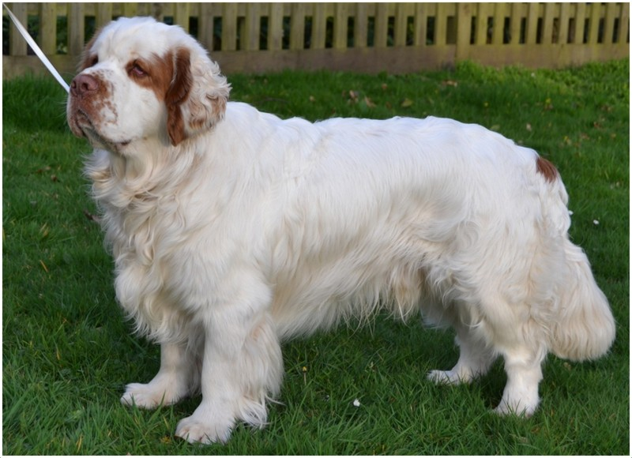
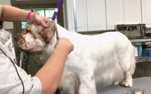
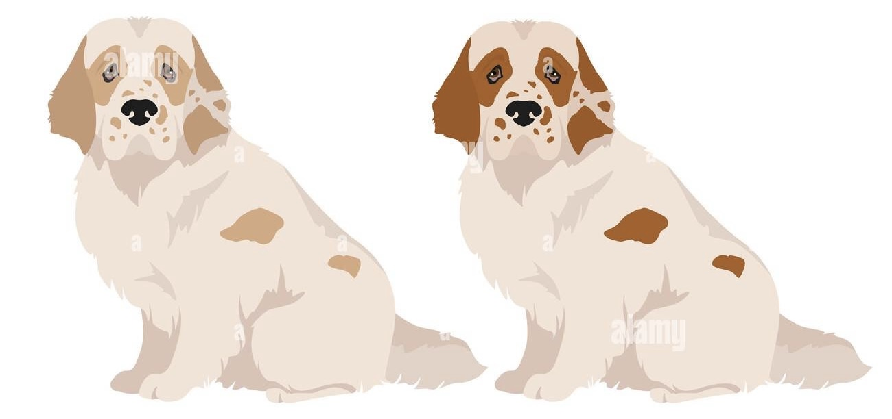

Breed Info
The Clumber Spaniel is calm, dignified, and known for its gentle nature and distinctive heavy build.

Calm, dignified, and affectionate with family. Deliberate and steady; aloof with strangers.

Dense double coat needs regular brushing, especially during seasonal shedding. Regular ear cleaning and paw and feather trims recommended.

Predominantly white with lemon or orange markings.
Official DogsWest and ANKC standards for the breed.